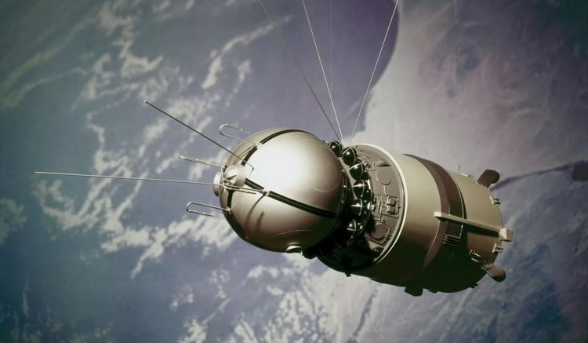
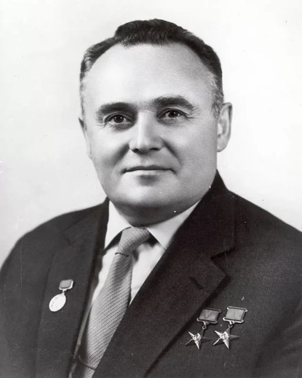
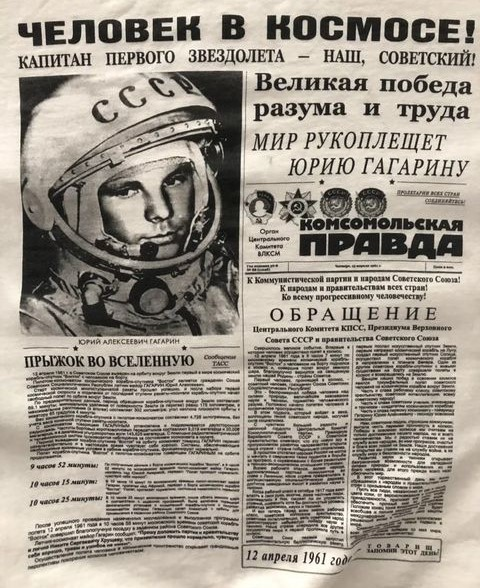

On April 12, 1961, the Vostok launch vehicle lifted off from the Baikonur Cosmodrome at 9:07 AM Moscow time. For the first time in human history, a spacecraft carrying a human successfully entered space. The pilot on board was 27-year-old Soviet Air Force officer Yuri Gagarin.
Sergey Korolev
Sergey Korolev was a leading Soviet rocket engineer and spacecraft designer. As the chief architect of the Soviet space program, he played a crucial role in the development of rocket technology and space exploration. Korolev was responsible for many of the Soviet Union’s greatest achievements in space, including launching the first artificial satellite and sending the first human into orbit.Biography
In 1936 Korolev became the chief engineer of a department at a Soviet research institute focused on rocket-powered aircraft. With his exceptional technical knowledge and innovative ideas, he proposed early concepts for interceptor rockets capable of rapidly reaching high altitudes. During the political purges of the late 1930s he was falsely accused of political crimes and arrested in 1938. He was sentenced to ten years in a labor camp in Kolyma, one of the most difficult periods of his life. Soviet authorities later realized his importance as an engineer. Without his expertise, important military aviation projects struggled to progress, so he was transferred to a special design bureau where imprisoned scientists worked on aircraft and rocket technology.Achievements
In 1940 Korolev participated in the development of a new bomber designed by Andrei Tupolev. The aircraft, later known as the Tu-2, successfully passed testing and entered mass production. In the mid-1940s Korolev began designing new rocket systems. Soon it became known that similar technologies had already been developed in Germany during World War II, so Soviet engineers were sent there to study the captured technology. In 1946 the Soviet Union began large-scale rocket production. The Scientific Research Institute for Reaction Weapons (NII-88) was established and Korolev held one of the key positions. His rockets gradually achieved longer ranges:- R-1 – 300 km
- R-2 – 600 km
- R-5M – 1,200 km
- R-7 – 8,000 km
- R-7A – 12,000 km

Yuri Gagarin
Becoming a Cosmonaut
In 1959 Yuri Gagarin was invited to join a group of test pilots selected to evaluate advanced aerospace technology that would later become spacecraft. Later that year he traveled to Moscow for extensive medical examinations. On March 7, 1960 he officially joined the Soviet cosmonaut corps and began training for the first manned space mission. By January 1961 he had been certified as an Air Force cosmonaut. On April 8, 1961 the state commission confirmed Gagarin as the pilot of the spacecraft Vostok 1. German Titov was chosen as his backup.After the Flight
After the successful mission Gagarin became an international celebrity. Over the next three years he visited nearly 30 countries including the United Kingdom, Japan, India, Brazil, France and Canada. In 1968 he was allowed to return to active flight duty in the Soviet Air Force.Death
Yuri Gagarin died on March 27, 1968 during a training flight in a MiG-15UTI jet together with instructor Vladimir Seryogin. The aircraft crashed near the village of Novosyolovo in the Vladimir region. The exact cause of the accident has never been fully clarified.
Mission
The launch vehicle 8K72K, later known as the Vostok rocket, was launched on April 12, 1961 from the Baikonur Cosmodrome. The spacecraft completed one orbit around Earth and safely returned later the same day. During reentry Gagarin ejected from the capsule and landed separately by parachute near the village of Smelovka in the Saratov region. This fact remained secret for years because international aviation rules required pilots to land inside their aircraft for the flight to be recognized as a world record. In 1971 the rules were changed because spacecraft landings differ from normal aviation.
International Reaction and Significance
Gagarin’s flight attracted worldwide attention. Leaders from many countries congratulated the Soviet Union on this historic achievement. The mission is often compared to major milestones in exploration such as Christopher Columbus’s voyage to the Americas or the first transatlantic flights. During the Cold War the success of Vostok 1 was seen as a major technological victory for the Soviet Union and intensified the space race with the United States. The mission proved that humans could survive and work in space and opened the path for future space exploration. Yuri Gagarin quickly became one of the most famous people in the world.